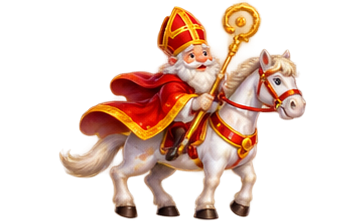

✦ MagischeRadar✦

VANDAAG OP REISSinterklaas & Pieten✨ Kijk wat er onderweg gebeurt!
✨ Een magische reis door Nederland wacht op je!
✨
Een avontuur begint!
Er gebeurt iets magisch onderweg.
▶ Voorbeeldreis: 0%
De magische reis begint binnenkort